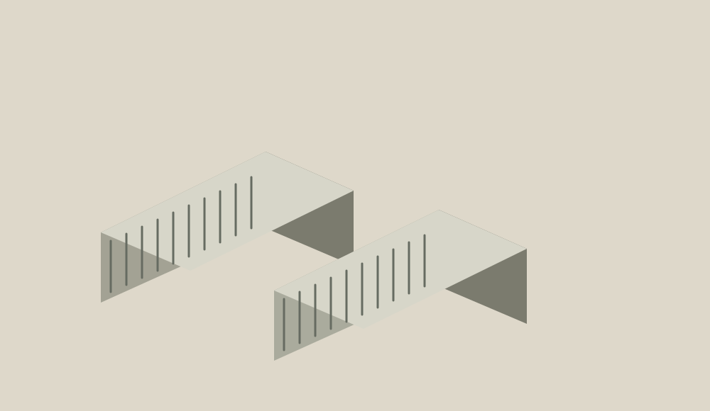
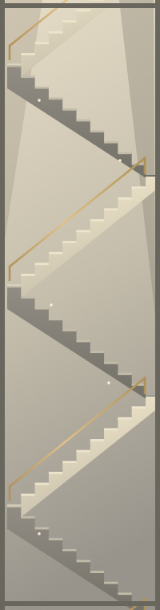
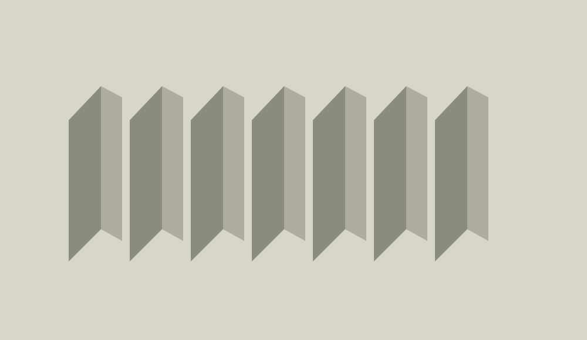
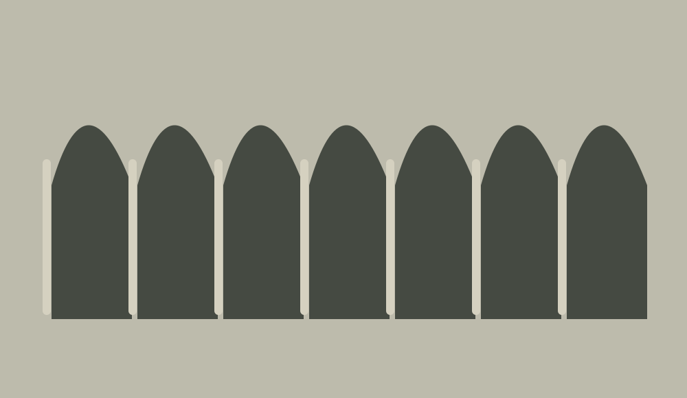

مسکونی
خانهی حیاط میانی
نور وارد حیاط فرورفته میشود و میان اتاقها میچرخد.

خانهی حیاط میانی
↙ساختمانهایی با نسبت دقیق، مادهی صادق و فضایی برای مکث. طراحی از بافت شهر شروع میشود.
مرور پروژههاچند مطالعه دربارهی نور، سکونت و پیوند بنا با زمین.

نور وارد حیاط فرورفته میشود و میان اتاقها میچرخد.

گذرگاهی نیمهباز، میدان را به تالار عمومی وصل میکند.

سازهی موجود خوانا میماند و کاربری فرهنگی تازهای میگیرد.
خوانش زمین، نور، همسایگی و حافظهی مکان.
تبدیل مطالعات به نقشه و نمونهی فیزیکی مصالح.
حضور در کارگاه و پیگیری کیفیت جزئیات تا پایان.
سه یادداشت از تصمیمهایی که شخصیت ساختمان را در مرحلهی جزئیات شکل میدهند.
رد قالب و محل اتصالها جزئی از نما میشوند. نور مایل، بافت سطح را در طول روز تغییر میدهد.
ریتم تختهها، لبهی نشیمن و رنگ روغن در یک نمونهی واقعی کنار هم آزموده میشوند.
رجچینی و عمق بندها تعیین میکنند دیوار در سایه و آفتاب چطور خوانده شود.
موقعیت زمین، حدود متراژ و تصویری از نیازهای استفادهکنندگان.
فرم پایین صفحه را تکمیل کن. یک فایل متنی از انتخاب و توضیحاتت دریافت میکنی.
این قالب نمایشی است. با تکمیل فرم، خلاصهی درخواستت را به صورت فایل متنی دریافت میکنی.
 انتخاب این قالب
انتخاب این قالب